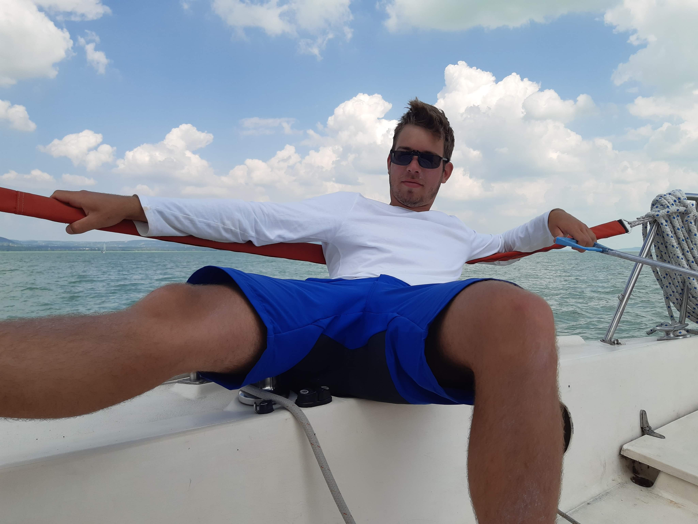
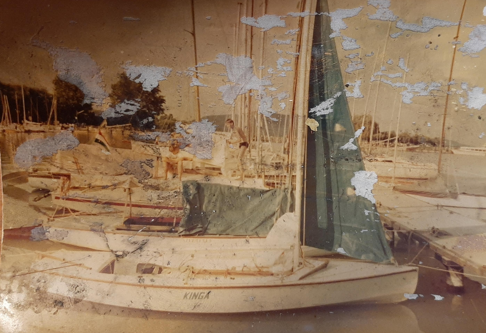

Bemutatkozás
Szutter Bálint vagyok. Első éves gépészmérnök hallgató. Ezt az oldalt azért hoztam létre, hogy egy számomra nagyon kedves projektemet mutassam be.
A KINGA projekt
Tavaly augusztusban hajófelújításba kezdtem édesapámmal. Az őáltala 1985-ben épített hajó köztes 3 gazda után végre újra hozzánk került és úgy döntöttünk adunk neki egy újabb esélyt. Kilenc hónapot dolgoztunk rajta minden szabadidőnkben és az eredmény egyértelműen meggyőzött bennünket arról, hogy minden perc munka megérte. Ezen a honlapon szeretném kicsit bemutatni, hogy milyen munkákat kellett végeznünk a hajón, és kicsit közelebb hozni egy laikushoz, hogy milyen egy ilyen vitorlás felújítása.
A hajó bemutatása
A hajó neve KINGA egy 1985-ben épített kalóz típusú vitorlás. Öt méter hosszú, és kb. 2m a legszélesebb pontján. Svertes hajó, de nem borul könnyen, elég stabil típus. Vitorlái összesen 10 m2-esek, és a spinakker újabb 10 m2, de azt csak hátszél és félszél esetén lehet használni. Jobbra az egyetelen eredeti állapotát ábrázoló kép látható.
Navigáció az oldalon
A fejlécben található fülekre kattintva meg lehet tekinteni, hogy milyen feladtokat kellett megoldani, milyen alkatrészeket kellett legyártani vagy sajátkezűleg elkészíteni, és, hogy milyen technológiákat kellett alkalmazni a felújítás során.
